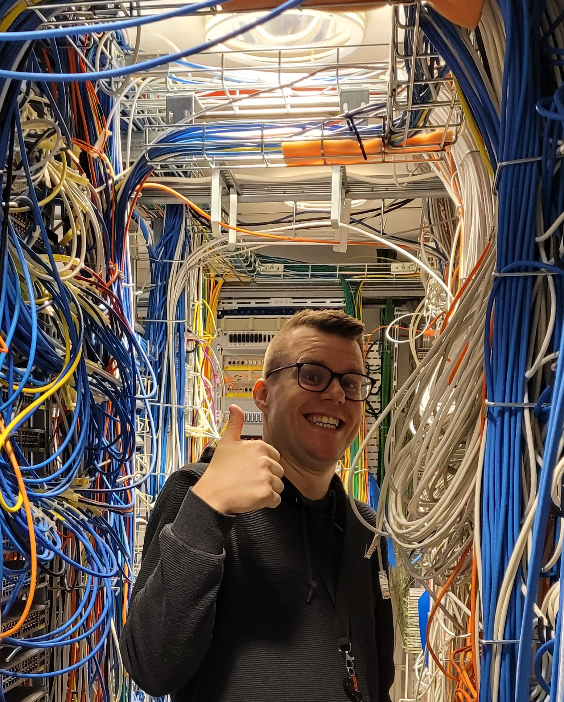

Petter Eriksson - My Resume

Summary
As a dedicated husband and father of two,
I am an inquisitive and hardworking individual who recently took the bold step
to follow my dreams and transition from a career in education to the dynamic field of IT.
My diverse professional background spans retail, construction, industrial cleaning,
telemarketing, education, and CISCO networks.
Despite the challenges of limited free time, I make the most of every opportunity
to engage in activities that fuel my passion. Whether it's exploring documentaries
on YouTube, coding, immersing myself in fantasy and sci-fi books, enjoying board games
and Magic: The Gathering with friends and my wife, or indulging in computer games,
I am committed to continuous learning and personal growth.
My versatile skill set, coupled with a love for cooking and enhancing my culinary skills,
reflects my proactive approach to life. I thrive on challenges, always seeking new ways
to expand my knowledge and contribute meaningfully to the ever-evolving world of technology.
With strong social skills, I have consistently proven my ability to connect with diverse
groups of people, fostering positive relationships and effectively collaborating with
others in various professional settings.
Education
- Yrkesvux Nätverkstekniker - Tullängsskolan (2022)
- Self-taught Python programmer. Started learning in 2022
- Dr. Angela Yu's "The Complete 2024 Web Development Bootcamp"
Work Experience
-
Örebroporten Fastigheter
2004-2005
- Building maintenance for industrial buildings.
-
Assidomän/Korsnäs Frövi
2006-2007
- Industrial cleaning in a papermill.
-
K3 Nordic
2008-2009
-
Praktikcentrum Örebro Kommun
2010-2011
- Apprenticeship followed by employment as laborer on construction sites.
-
Lidl Sverige
2012-2013
- Retail worker and 2013 I became assistant manager.
-
Systembolaget
2014-2014
-
Örebro Kommun, Hampetorps Skola
2014-2016
-
Hallsbergs Kommun, Alléskolan
2015-2018
- Substitute teacher in special needs education for 15-19 year olds.
-
Hallsbergs Kommun, Svalan Ungdomsfritids
2015-2018
- Youth worker for special needs students at youth recreation center.
-
Kumla Kommun, Smedstorps Korttidsboende
2015-2018
- Assistant at assisted living for youths with special needs.
-
Kumla Kommun, Stene Skola
2018-2022
- Youth worker for kids aged 6 to 12 and substitute teacher.
-
Region Örebro Län, Regionservice - Stödsystem
2022-Present
- System administrator for Heroma, PingPong, Microweb, Infocaption and Grade.
Skills
- Customer service
- Problem solving
- Python
- SQL
- HTML
- Swedish
- English
Certifications
See LinkedIn Profile for these certificates.
- Crash Course on Python from Coursera
- Learn SQL Course from Codecademy
- Wireshark for Basic Network Security Analysis from Coursera
Other